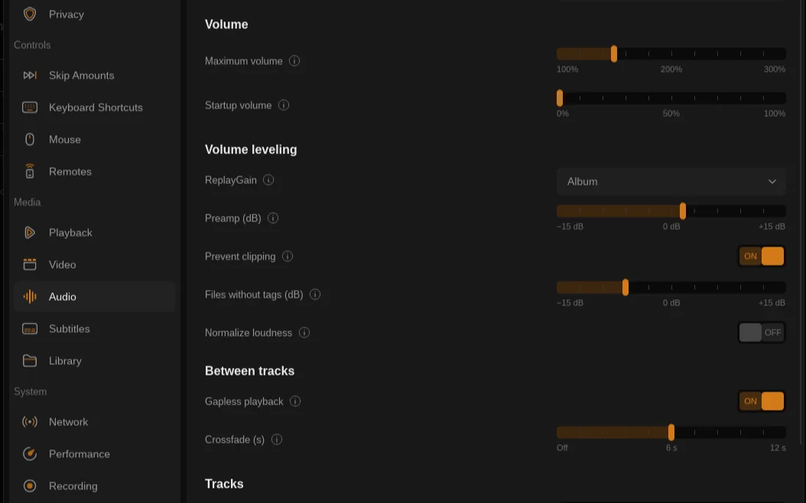
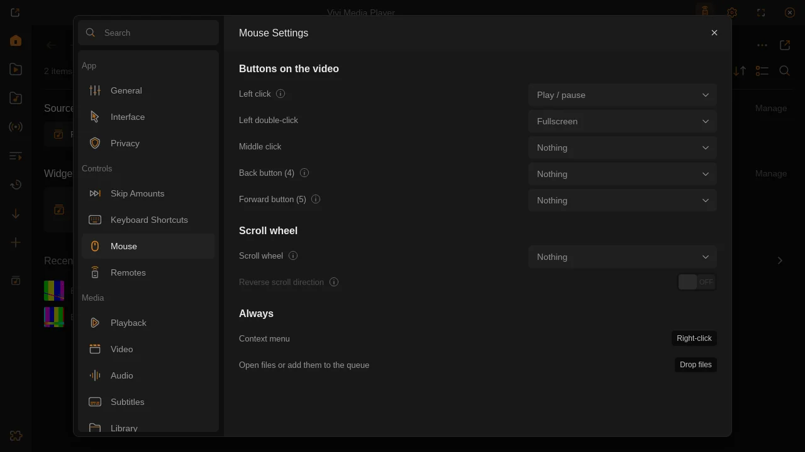
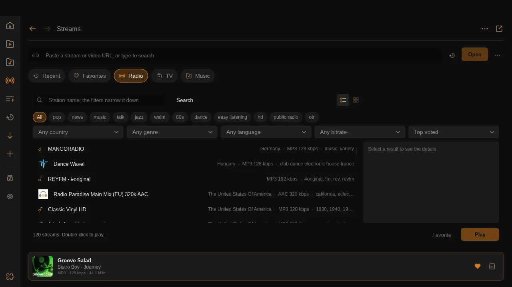
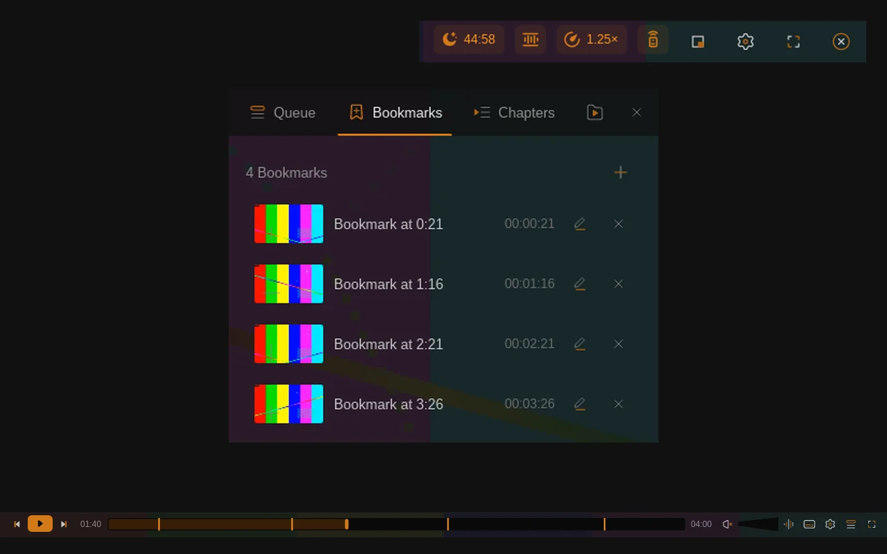
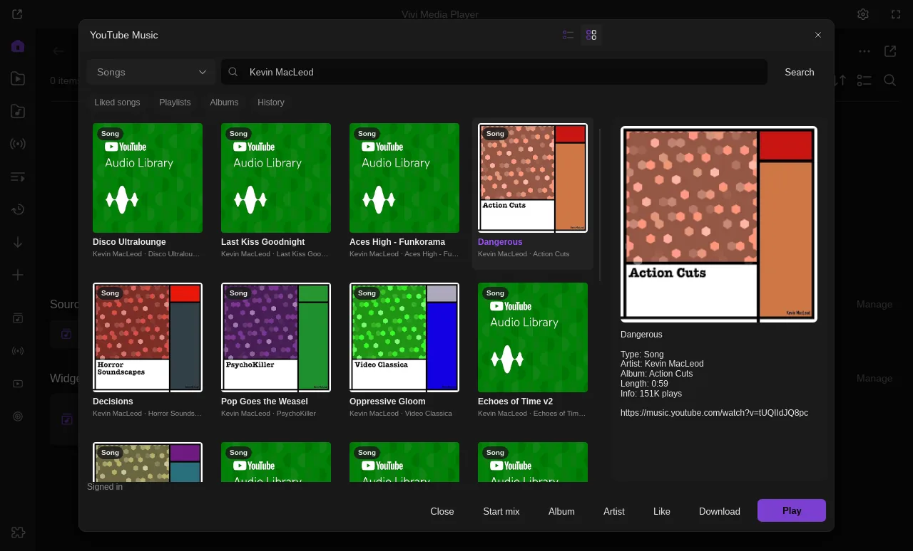
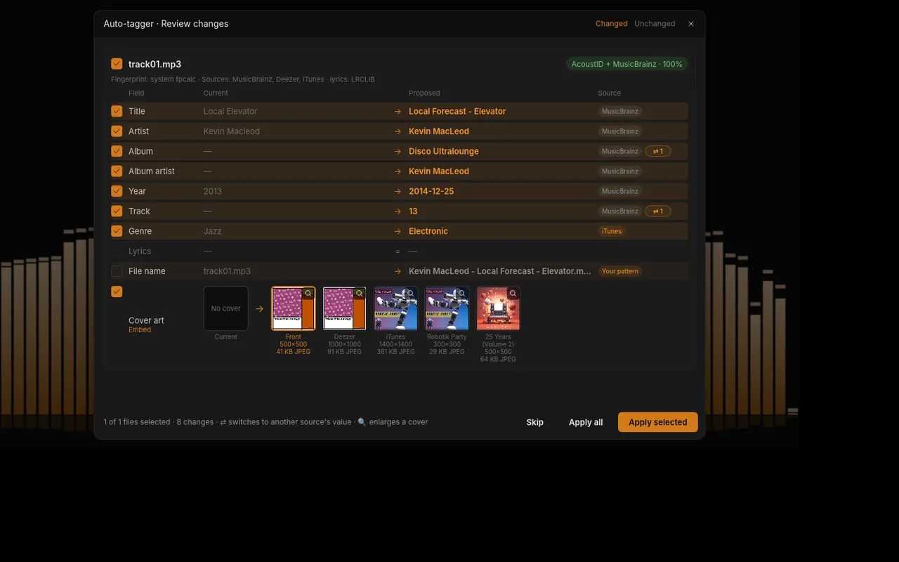
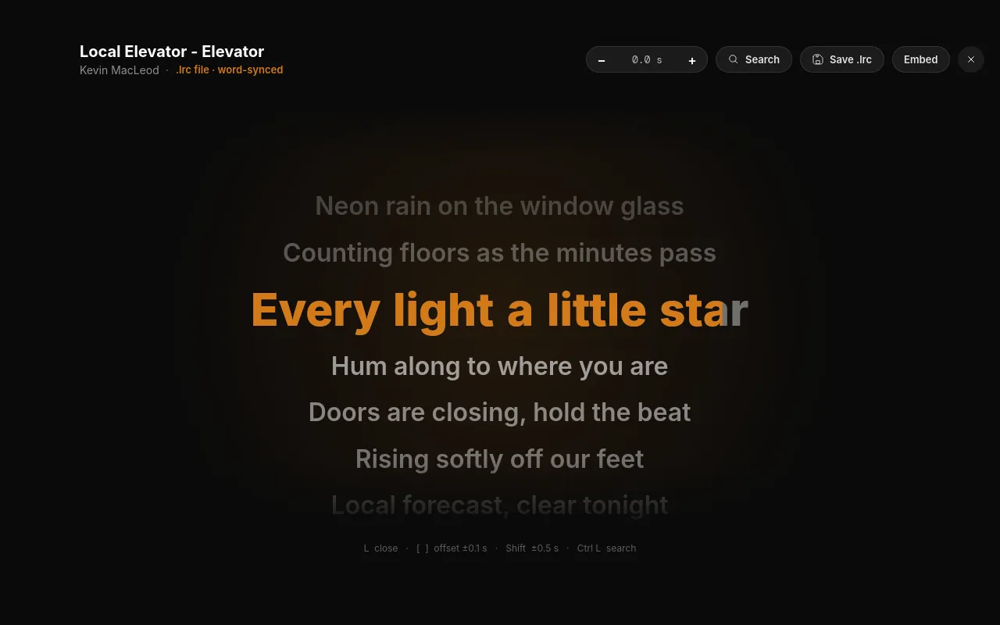
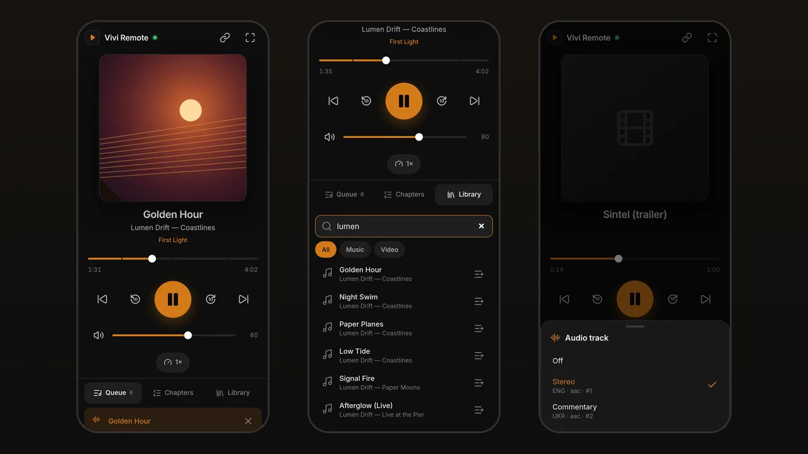

Vivi
ViviFast. Light. Clean.
Vivi is a desktop media player written in Rust on top of mpv. It opens in under a second, stays out of the way while you watch, and is surprisingly good at music.
- 18.8 MBLinux download
- 48.2 MBinstalled
- <1 sto first window
- MITfree and open source
Highlights
A video player that is surprisingly good at music. Click any picture to see it full size.
Volume leveling, gapless and crossfade New in 0.15
ReplayGain by track or album with a preamp, clipping protection and a gain for untagged files, so tagged songs play at a similar loudness. Local music plays gapless by default, and an optional soft crossfade of up to 12 s fades one track out before the next fades in. Settings → Audio.


Your mouse, your keys New in 0.15
Settings → Controls gathers Seeking & Steps, Keyboard Shortcuts, Mouse and Remotes. Choose what left click, double-click, middle click and the Back / Forward side buttons do on the video, and whether the scroll wheel changes volume, speed or seeks. Seeking & Steps adds a speed step of 0.05, 0.1 or 0.25×.


Streams hub New in 0.14
One Library page for everything you stream: a URL bar with history, Recent, Favorites, Radio, TV and Music tabs with the same cards and ★, and a shared now-playing card with lyrics, record and download. Services like Free Music and YouTube Music open straight from the sidebar.


Bookmarks, sleep timer and status chips New in 0.14
Ctrl B bookmarks the spot: bookmarks are saved per file with a small frame, pinned on the seek bar and listed in the side panel. The sleep timer runs for any number of minutes, to the end of the chapter or for a number of items, and fades the volume out. New in 0.15: Use as chapters turns bookmarks into chapters and Save chapters… writes an FFmpeg chapters file. Clickable chips in the top bar show what is on: sleep timer, loudness, A-B loop, speed or remote.


YouTube Music
Your own YouTube Music account in Vivi: search (no sign-in needed), your library, album, playlist and artist pages, up next and mixes, likes and opt-in downloads. Open it from the sidebar or, new in 0.14, from the Streams hub's Music tab. An unofficial plugin from the marketplace.


Auto-tagger
Identifies songs by audio fingerprint or tags, merges several sources ranked by confidence, and lets you review every field before it writes. Every write can be undone.


Karaoke lyrics
Press L for full-screen synced lyrics with a word-by-word highlight, from .lrc files, your tags or LRCLIB.


Remote control from your phone
Control Vivi from your phone, tablet or another computer on the same network: cover art, a seek bar with chapter marks, volume, audio and subtitle tracks, the queue and library search. Pair by QR code; a PIN keeps others out. Version 1.3.0 shows and sets Vivi’s own sleep timer. A free plugin from the marketplace.


And everything else
Everything mpv plays, in a dark UI based on the Figma “VLC Redesign”.
Plays everything
libmpv with hardware decoding on Wayland and X11, subtitles, chapters, A-B loop, speed and filters.
Library
Continue Watching, music by artist and album, folders, playlists, the Streams hub and thumbnails.
Subtitles
Load subtitle files from your computer for one video or pair a whole folder, no plugin needed; search OpenSubtitles by file hash, name or IMDb id; per-file offsets with Z / X.
Remembers
Resume positions, per-show presets for delays and track languages, recent files.
Music visualizer
Spectrum, scope, waveform, radial, particle and pitch visuals fed from what mpv actually plays.
Miniplayer
Press P for a compact always-on-top window with an optional queue view.
Customize Player
Re-order, remove or add bottom-bar buttons and pick one of four progress bar styles, with a live preview.
Free Music
Creative Commons and public-domain music from Jamendo, the Internet Archive and the Free Music Archive, with licence filters. Internet Archive and FMA tracks download in the app; Jamendo tracks open on Jamendo.
Seek preview
Frame thumbnails while you hover the seek bar, from the Chapter Thumbnails extension.
Equalizer
A 10-band equalizer with a preamp, VLC’s presets and your own, saved and shared as JSON; Alt E picks the next preset.
Waveform seekbar
See the quiet intro, the drop and the outro before you seek. Chapters and A-B loop ranges show on the bar too.
Skip intro, credits and sponsors
One Skip button for intros and credits from chapter names, your own per-show ranges and SponsorBlock segments. Alt K presses it, or let it skip automatically with an Undo.
Plugins & marketplace
Install and update plugins from Settings → Extensions → Browse: chapter previews, YouTube downloads, SponsorBlock, Night Mode, subtitle auto-sync, a phone remote and more. Any mpv Lua or JavaScript script works too.
AI agents over MCP
The optional vivi-mcp server lets Claude, Cursor and other agents control playback, queue, subtitles, bookmarks, the A-B loop and the sleep timer over a private local socket.
Keyboard-first
Everything has a shortcut, and one keymap drives the menus, Settings and onboarding hints.
Get Vivi
Install, update or remove Vivi with one copy-paste. Pick your system; the commands use the latest release, v@VIVI_VERSION@.
Direct downloads (sizes for v0.15.0):
Linux tarball
x86_64 · 18.8 MB · needs libmpv
Flatpak
x86_64 · 14.9 MB · Flathub runtime
AppImage
x86_64 · 48.5 MB · libmpv bundled
Windows 10/11
x86_64 zip · 60.9 MB · libmpv included
macOS
Apple Silicon zip · 41.5 MB · unsigned, best effort
Install script Recommended
Downloads the latest release and checks it against SHA256SUMS. On Arch it builds the vivi-bin package with makepkg -si; elsewhere it installs into ~/.local and tells you if libmpv is missing. Read the script.
curl -fsSL https://viviplayer.app/install.sh | shArch Linux: vivi-bin / vivi-git
Not on the AUR yet: these build the repo's AUR PKGBUILDs with makepkg. vivi-bin is the prebuilt release, vivi-git builds the latest master.
# vivi-bin (prebuilt release)
mkdir vivi-bin && cd vivi-bin
curl -fLO https://viviplayer.app/vivi-bin/PKGBUILD
makepkg -si
# or vivi-git (latest master, built from source)
git clone https://github.com/Loafer19/vivi
cd vivi/packaging/aur/vivi-git && makepkg -siFlatpak
Not on Flathub yet: install the release bundle (it pulls the runtime from Flathub).
flatpak remote-add --user --if-not-exists flathub https://dl.flathub.org/repo/flathub.flatpakrepo
curl -fLO https://github.com/Loafer19/vivi/releases/download/v@VIVI_VERSION@/vivi-v@VIVI_VERSION@-x86_64.flatpak
flatpak install --user vivi-v@VIVI_VERSION@-x86_64.flatpak
flatpak run io.github.loafer19.viviAppImage
Any x86_64 distribution, libmpv bundled. One file: make it executable and run it.
mkdir -p ~/Applications && cd ~/Applications
curl -fLO https://github.com/Loafer19/vivi/releases/download/v@VIVI_VERSION@/Vivi-v@VIVI_VERSION@-x86_64.AppImage
chmod +x Vivi-v@VIVI_VERSION@-x86_64.AppImage
./Vivi-v@VIVI_VERSION@-x86_64.AppImageScoop Recommended
Installs the portable build from the manifest in the repo, with a Start menu shortcut and a vivi command.
scoop install https://raw.githubusercontent.com/Loafer19/vivi/master/packaging/scoop/vivi.jsonwinget
Not in the winget catalog yet: install from the manifest in the repo. Allowing local manifests needs an admin terminal once.
winget settings --enable LocalManifestFiles
git clone https://github.com/Loafer19/vivi
winget install --manifest .\vivi\packaging\wingetPortable zip (PowerShell)
Windows 10/11 x64. There is no installer: the zip has vivi.exe and libmpv-2.dll.
Invoke-WebRequest https://github.com/Loafer19/vivi/releases/download/v@VIVI_VERSION@/vivi-v@VIVI_VERSION@-windows-x86_64.zip -OutFile vivi.zip
Expand-Archive vivi.zip "$env:LOCALAPPDATA\Programs" -Force
& "$env:LOCALAPPDATA\Programs\vivi-v@VIVI_VERSION@-windows-x86_64\vivi.exe"App zip (Terminal) Experimental
Apple Silicon only, ad-hoc signed. If you download it in a browser instead, right-click Vivi.app → Open the first time. There is no Homebrew cask or .dmg yet.
curl -fLO https://github.com/Loafer19/vivi/releases/download/v@VIVI_VERSION@/vivi-v@VIVI_VERSION@-macos-arm64.zip
ditto -x -k vivi-v@VIVI_VERSION@-macos-arm64.zip /Applications
open /Applications/Vivi.appInstall script
Run it again: it installs the latest release over the old one (on Arch it rebuilds vivi-bin).
curl -fsSL https://viviplayer.app/install.sh | shArch Linux: vivi-bin / vivi-git
Rebuild the package in the folder you built it in.
# vivi-bin: fetch the PKGBUILD of the new release
cd vivi-bin
curl -fLO https://viviplayer.app/vivi-bin/PKGBUILD
makepkg -si
# vivi-git: makepkg pulls the latest master
cd vivi/packaging/aur/vivi-git && makepkg -siFlatpak
A bundle has no update source: download the new one and reinstall it (settings stay). flatpak update keeps the runtime current.
curl -fLO https://github.com/Loafer19/vivi/releases/download/v@VIVI_VERSION@/vivi-v@VIVI_VERSION@-x86_64.flatpak
flatpak install --user --reinstall vivi-v@VIVI_VERSION@-x86_64.flatpak
flatpak update --userAppImage
Replace the file with the new release.
cd ~/Applications && rm -f Vivi-v*-x86_64.AppImage
curl -fLO https://github.com/Loafer19/vivi/releases/download/v@VIVI_VERSION@/Vivi-v@VIVI_VERSION@-x86_64.AppImage
chmod +x Vivi-v@VIVI_VERSION@-x86_64.AppImageScoop
scoop update viviwinget
Run it where you cloned the repo: pull the updated manifest, then upgrade from it.
git -C vivi pull
winget upgrade --manifest .\vivi\packaging\wingetPortable zip (PowerShell)
Remove the old folder and unpack the new release. Settings are kept.
Remove-Item -Recurse "$env:LOCALAPPDATA\Programs\vivi-v*-windows-x86_64"
Invoke-WebRequest https://github.com/Loafer19/vivi/releases/download/v@VIVI_VERSION@/vivi-v@VIVI_VERSION@-windows-x86_64.zip -OutFile vivi.zip
Expand-Archive vivi.zip "$env:LOCALAPPDATA\Programs" -ForceApp zip (Terminal)
Replace Vivi.app with the new release. Settings are kept.
rm -rf /Applications/Vivi.app
curl -fLO https://github.com/Loafer19/vivi/releases/download/v@VIVI_VERSION@/vivi-v@VIVI_VERSION@-macos-arm64.zip
ditto -x -k vivi-v@VIVI_VERSION@-macos-arm64.zip /ApplicationsInstall script
Removes the vivi-bin package on Arch, or the files it put in ~/.local.
curl -fsSL https://viviplayer.app/install.sh | sh -s -- --uninstallArch Linux: vivi-bin / vivi-git
sudo pacman -R vivi-bin
# or
sudo pacman -R vivi-gitFlatpak
Add --delete-data to also remove its settings and library (~/.var/app/io.github.loafer19.vivi).
flatpak uninstall --user io.github.loafer19.viviAppImage
Delete the file.
rm ~/Applications/Vivi-v*-x86_64.AppImageSettings and library
Uninstalling keeps them. To start from scratch, remove these too:
rm -rf ~/.config/vivi ~/.local/share/vivi ~/.local/state/vivi ~/.cache/viviScoop
scoop uninstall viviwinget
Run it where you cloned the repo.
winget uninstall --manifest .\vivi\packaging\wingetPortable zip (PowerShell)
Remove-Item -Recurse "$env:LOCALAPPDATA\Programs\vivi-v*-windows-x86_64"Settings and library
Uninstalling keeps them. To start from scratch, remove these too:
Remove-Item -Recurse -Force -ErrorAction SilentlyContinue "$HOME\.config\vivi", "$HOME\.local\share\vivi", "$HOME\.local\state\vivi", "$HOME\.cache\vivi"App
rm -rf /Applications/Vivi.appSettings and library
Uninstalling keeps them. To start from scratch, remove these too:
rm -rf ~/.config/vivi ~/.local/share/vivi ~/.local/state/vivi ~/.cache/vivi1. Dependencies
Pick your distribution. Optional at runtime: ffmpeg (library thumbnails) and yt-dlp (YouTube).
# Debian / Ubuntu
sudo apt install build-essential pkg-config git libmpv-dev libxkbcommon-dev libfontconfig1-dev libgtk-3-dev libsqlite3-dev
# Fedora
sudo dnf install gcc pkgconf-pkg-config git mpv-devel libxkbcommon-devel fontconfig-devel gtk3-devel sqlite-devel
# Arch / Omarchy
sudo pacman -S --needed base-devel git rust mpv sqlite libxkbcommon wayland mesa2. Rust
Debian, Ubuntu and Fedora: get a current stable Rust with rustup (Arch's rust package above is fine).
curl --proto '=https' --tlsv1.2 -sSf https://sh.rustup.rs | sh3. Build and run
vivi and vivi-mcp end up in target/release/. Your own build has no built-in Jamendo and AcoustID keys: add yours in Settings, or set VIVI_JAMENDO_CLIENT_ID and VIVI_ACOUSTID_KEY when building. More in the docs.
git clone https://github.com/Loafer19/vivi && cd vivi
cargo build --release
./target/release/vivi
# optional: put both on your PATH
install -Dm755 -t ~/.local/bin target/release/vivi target/release/vivi-mcpWindows
Building on Windows needs libmpv from mpv-winbuild-cmake and an MSVC import library for it; the exact steps are in the release workflow. The prebuilt zip is the easy way.
macOS (Apple Silicon) Experimental
Homebrew's mpv provides libmpv. Your own build has no built-in Jamendo and AcoustID keys: add yours in Settings, or set VIVI_JAMENDO_CLIENT_ID and VIVI_ACOUSTID_KEY when building. More in the docs.
# Rust (skip if you already have it)
curl --proto '=https' --tlsv1.2 -sSf https://sh.rustup.rs | sh
brew install mpv
git clone https://github.com/Loafer19/vivi && cd vivi
LIBRARY_PATH=/opt/homebrew/lib cargo build --release
./target/release/vivi